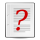

Economy of Mozambique
 | This article includes a list of general references, but it lacks sufficient corresponding inline citations. (August 2010) |
Maputo City, capital and financial center of Mozambique | |
| Currency | Mozambican metical (MZN) |
|---|---|
| Calendar Year | |
Trade organisations | AU, AfCFTA (signed), African Development Bank, SADC, World Bank, IMF, WTO, Group of 77 |
Country group | |
| Statistics | |
| GDP | |
GDP growth |
|
GDP per capita | |
GDP by sector |
|
| 3.911% (2018)[3] | |
Population below poverty line | 52% (2009 est.) |
Labour force | 10.1 million (2012 est.) |
Labour force by occupation |
|
| Unemployment | 17% (2007 est.) |
Main industries | aluminum, coal, petroleum products, chemicals (fertilizer, soap, paints), cement, asbestos, glass, textiles, tobacco, food processing, beverages |
| External | |
| Exports | |
Export goods | aluminum, coal, bulk electricity, lumber, cotton, prawns, cashews, sugar, citrus |
Main export partners |
|
| Imports | |
Import goods | fuel, chemicals, machinery, vehicles, metal products, textiles, food |
Main import partners |
|
Gross external debt | $7.79 billion (2014 est.) |
| Public finances | |
| 34.6% of GDP (2012 est.) | |
| -4.0% of GDP (2012 est.) | |
| Revenues | $4.315 billion (2012 est.) |
| Expenses | $4.904 billion (2012 est.) |
| Standard & Poor's:[9] B+ (Domestic) B+ (Foreign) B+ (T&C Assessment) Outlook: Stable[10] Fitch:[10] B Outlook: Stable | |
All values, unless otherwise stated, are in US dollars. | |
{kind=link}
The economy of Mozambique is $14.396 billion by gross domestic product as of 2018, and has developed since the end of the Mozambican Civil War (1977–1992). In 1987, the government embarked on a series of macroeconomic reforms, which were designed to stabilize the economy. These steps, combined with donor assistance and with political stability since the multi-party elections in 1994, have led to dramatic improvements in the country's growth rate. Inflation was brought to single digits during the late 1990s, although it returned to double digits in 2000–02. Fiscal reforms, including the introduction of a value-added tax and reform of the customs service, have improved the government's revenue collection abilities.
In spite of these gains, Mozambique remains dependent upon foreign assistance for much of its annual budget. Subsistence agriculture continues to employ the vast majority of the country's workforce. A substantial trade imbalance persists. However, the opening of the Mozal aluminium smelter, the country's largest foreign investment project to date, has increased export earnings. Additional investment projects in titanium extraction and processing and garment manufacturing should further close the import/export gap. Mozambique's once substantial foreign debt has been reduced through forgiveness and rescheduling under the International Monetary Fund's Heavily Indebted Poor Countries (HIPC) and Enhanced HIPC initiatives, and is now at a manageable level. Mozambique is a least developed country according to United Nations.
History
[edit]{kind=link}
The Portuguese rule
[edit]Although the Portuguese participated in the trading networks of East Africa as early as the 16th century, they did not establish hegemonic (total) colonial dominance over the entire territory that now comprises Mozambique until the 19th century. Portugal founded settlements, trading posts, forts and ports. Cities, towns and villages were founded all over the territory by the Portuguese, like Lourenço Marques, Beira, Vila Pery, Vila Junqueiro, Vila Cabral and Porto Amélia. Others were expanded and developed greatly under Portuguese rule, like Quelimane, Nampula and Sofala. By this time, Mozambique had become a Portuguese colony, but administration was left to the trading companies (like Mozambique Company and Niassa Company) who had received long-term leases from Lisbon. By the mid-1920s, the Portuguese created a highly exploitative and coercive settler economy, in which African natives were forced to work on the fertile lands taken over by Portuguese settlers. Indigenous African peasants mainly produced cash crops designated for sale in the markets of Portugal. Major cash crops included cotton, cashews, tea and rice. This arrangement ended in 1932 after the takeover in Portugal by the new António de Oliveira Salazar government. Thereafter, Mozambique, along with other Portuguese colonies, was put under the direct control of Lisbon. In 1951, it became an overseas province. The economy expanded rapidly during the 1950s and 1960s, attracting thousands of Portuguese settlers to the country. It was around this time that the first nationalist guerrilla groups began to form in Tanzania and other African countries. The strong industrial and agricultural development that did occur throughout the 1950s, 1960s and early 1970s was based on Portuguese development plans, and also included British and South African investment.
In 1959–60, Mozambique's major exports included cotton, cashew nuts, tea, sugar, copra and sisal. The expanding economy of the Portuguese overseas province was fuelled by foreign direct investment, and public investment which included ambitious state-managed development plans. British capital owned two of the large sugar concessions (the third was Portuguese), including the famous Sena states. The Matola Oil Refinery, Procon, was controlled by England and the United States. In 1948 the petroleum concession was given to the Mozambique Gulf Oil Company. At Maotize coal was mined; the industry was chiefly financed by Belgian capital. 60% of the capital of the Compagnie de Charbons de Mozambique was held by the Societe Miniere et Geologique Belge, 30% by the Mozambique Company, and the remaining 10% by the governing authorities of the territory.
Three banks were in operation, the Banco Nacional Ultramarino, Portuguese, Barclays Bank, D.C.O., British, and the Banco Totta e Standard de Moçambique (a joint-venture between Standard Bank of South Africa and Banco Totta & Açores of the Portuguese mainland). Nine out of the twenty-three insurance companies were Portuguese. 80% of life-insurance was in the hands of foreign companies which testifies the openness of the economy. The Portuguese overseas province of Mozambique was the first territory of Portugal, including the European mainland, to distribute Coca-Cola. Lately the Lourenço Marques Oil Refinery was established by the Sociedade Nacional de Refinação de Petróleo (SONAREP) – a Franco-Portuguese syndicate. In the sisal plantations Swiss capital was invested, and in copra concerns, a combination of Portuguese, Swiss and French capital was invested. The large availability of capital from both Portuguese and international origin, allied to the wide range of natural resources and the growing urban population, lead to an impressive growth and development of the economy. From the late stages of this notable period of high growth and huge development effort started in the 1950s, was the construction of the Cahora Bassa dam by the Portuguese, which started to fill in December 1974 after construction was commenced in 1969.
In the face of intransigent Portuguese ruling authorities, the main nationalist movement, FRELIMO, began a guerrilla war which gradually wrested control of parts of the northernmost regions of the territory from the Portuguese. The Mozambican War of Independence came to an end in 1974 following a leftist military coup in Portugal. The new left-wing government in Lisbon had no wish to maintain an empire and negotiations on the country's independence began immediately. In 1975, after the leftist military coup of 24 April 1974 in Portugal that overthrew the Estado Novo regime which had governed the country and its overseas territories, the colonial wars that raged in the various Portuguese African territories since the early 1960s ended. At independence, Mozambique's industrial base was well-developed by Sub-Saharan Africa standards, thanks to a boom in investment in the 1960s and early 1970s. Indeed, in 1973, value-added in manufacturing was the sixth highest in Sub-Saharan Africa. However, further industrialisation was stopped by the hasty exodus of 90 percent of the ethnic Portuguese citizens during and after the independence process which was concluded on June 25, 1975. The rapid exodus of Mozambique's Portuguese population left its economy in disarray. The situation was exacerbated by the Mozambican Civil War (1977–1992) during the following years that destroyed the remaining wealth and left the former Portuguese Overseas Province in a state of disrepair.
Independent Mozambique
[edit],_%25_of_world_average,_1960-2012;_Zimbabwe,_South_Africa,_Botswana,_Zambia,_Mozambique.png){kind=link}
Mozambique became an independent state in 1975. The exodus of trained Portuguese workers and the eruption of the Mozambican Civil War in 1977 opposing RENAMO to FRELIMO, drove the country to absolute chaos. Mozambique became an independent republic and the Frente de Libertacao de Mocambique (FRELIMO), the socialist guerrilla organization that had fought the colonial war against Portugal, assumed power. Over the next several years, FRELIMO pursued numerous socialist policies, including nationalization of land and large industries, centralized planning, and heavy funding for the national educational and health systems, which however, remained weak for decades in independent Mozambique, and still are among the most ineffective and underfunded in the world. The exodus (mass departure) of the Portuguese following independence in 1975 facilitated the takeover of many shops by Mozambicans. Unfortunately, the exodus, which totaled over 275,000 ethnic Portuguese, also led to a huge loss of professionals, productive machinery, entrepreneurs, and skilled workers. By the early 1980s, Mozambique became what Joseph Hanlon—author of Peace Without Profit: How the IMF Blocks Rebuilding in Mozambique —called a "Cold War battlefield." The term refers to the situation in which socialist FRELIMO, with Soviet backing, was forced to fight a lengthy civil war (Mozambican Civil War) against a counterinsurgency movement of Mozambicans named RENAMO, funded and directed by the neighboring white minority states of apartheid South Africa and Rhodesia. The Cold War was defined by animosity between capitalist and socialist world powers, and though there was never an outright military conflict between the former and the latter, each respectively funded counterinsurgency movements against governments they disfavored. The capitalist governments of South Africa and Zimbabwe feared that a successfully ruled African socialist system might send a message of revolution and self-rule to citizens in contemporaneous majority rule African countries, such as their own.
The political pressure of the ideologically charged civil war, in conjunction with the excruciating need for aid and funds to finance imports, compelled FRELIMO to negotiate its first structural adjustment package (SAP) with the World Bank and the International Monetary Fund (IMF) in 1986 (commonly referred to as the Bretton Woods Institutions or International Financial Institutions—IFIs). The series of SAPs that followed thereafter, required privatization of major industries, less government spending, deregulation of the economy, and trade liberalization. The SAPs, therefore, have essentially focused on the implementation of an unfettered free market economy.
Today, the economy of Mozambique continues to be dominated by agriculture. Major exports include prawns, cotton, cashew nuts, sugar, citrus, copra and coconuts, and timber. Export partners, in turn, include Spain, South Africa, Portugal, the United States, Japan, Malawi, India, and Zimbabwe. Imports, such as farm equipment and transport equipment, are capital goods that are worth more than agricultural products, hence Mozambique's large trade deficit. The country also imports food, clothing, and petroleum products. Import partners include South Africa, Zimbabwe, Saudi Arabia, Portugal, the United States, Japan, and India. In the past several years, the value of imports outweighed the value of exports by 5 to 1 or more—a factor that obliges Mozambique to depend heavily on foreign aid and loans by foreign commercial banks and the Bretton Woods Institutions (BWIs). In 1995 alone, Mozambique received $1.115 billion in aid. In 1999, the total external debt stood at $4.8 billion. Fortunately, in the same year significant economic recovery did occur, as the real GDP growth rate reached 10 percent.
Sectors
[edit]All economic sectors ranging from manufacturing and agriculture to tourism and finance, declined sharply after independence from Portugal in 1975, but picked up in the 2000s after the end of the Mozambican Civil War, although they are still performing well below potential.
Gas and oil reserves
[edit]{kind=link}
Recent oil and gas discoveries across East Africa, most notably in Mozambique and Tanzania, have seen the region emerge as a new player in the global oil and gas Industry.
The discoveries have driven billions of dollars in annual investment to the region.[11] According to BMI estimates, the finds in the last few years are more than that of any other region in the world, and the discoveries are expected to continue for the next few years.[12][13]
Agriculture, fishing and forestry
[edit]In Mozambique, agriculture is the mainstay of the economy and the country has a great potential for growth in the sector. Agriculture employs more than 80 percent of the labour force and provides livelihoods to the vast majority of over 23 million inhabitants. Agriculture contributed 31.5 percent of the GDP in 2009, while commerce and services accounted for 44.9 percent. By contrast, 20 percent of the total export value in 2009 originated from the agriculture sector, mostly through the export of fish (mainly shrimps and prawns), timber, copra, cashew nuts and citrus, cotton, coconuts, tea and tobacco.[14]
.jpg){kind=link}
Agricultural potential is high, particularly in the fertile northern regions, which accounts for the bulk of the country's agricultural surplus. The main cash crops are sugar, copra, cashew nuts, tea, and tobacco. Total sugar production was expected to rise by 160% in the 2000s, which would make the country a major net exporter for the first time since independence. All the plantations and refineries have been privatized. Marine products, particularly prawns, are Mozambique's largest single export. There is an abundance of marine resources that are not fully exploited. After the Mozambican Civil War, the return of internally displaced persons and the gradual restoration of rural markets have enabled Mozambique to increase agricultural production dramatically.
Mozambique produced, in 2018:
- 8.5 million tons of cassava (9th largest producer in the world);
- 3 million tons of sugarcane;
- 1.6 million tons of maize;
- 625 thousand tons of sweet potato;
- 578 thousand tons of banana;
- 343 thousand tons of tomatoes;
- 273 thousand tons of potato;
- 227 thousand tons of coconut;
- 138 thousand tons of onion;
- 134 thousand tons of rice;
- 108 thousand tons of cashew nuts (11th largest producer in the world);
- 107 thousand tons of peanut;
- 93 thousand tons of tobacco;
- 90 thousand tons of sorghum;
- 89 thousand tons of cowpea;
- 85 thousand tons of castor bean;
- 66 thousand tons of pineapple;
- 65 thousand tons of sesame seed;
- 50 thousand tons of beans;
- 48 thousand tons of cotton;
In addition to smaller productions of other agricultural products.[15]
Food security, vulnerability and risk management
[edit]It is estimated that 64 percent of Mozambique's population is food insecure. The prevalence is higher in the southern region (75 percent).[16][17][18] Mozambique is a net importer of food. Total annual cereal import requirements average 0.89 million tons (0.14 million of maize, 0.39 of rice and 0.36 of wheat). Mozambique must also import substantial quantities of meat and livestock products.[19]
Despite good land and water availability, much of the food system relies on smallholder farmers which are vulnerable to natural disasters, exacerbating food insecurity challenges.Mining and semi-processing
[edit]There are large mineral deposits, but exploration has been constrained by the civil war (1977–1992) and poor infrastructure. The World Bank has estimated that there was the potential for exports worth US$200m by 2005 – in the late 1990s they totaled US$3.6m, some 1% of total exports, and a contribution of less than 2% of GDP. Minerals currently being mined include marble, bentonite, coal, gold, bauxite, granite, titanium and gemstones. Illegal exports from artisanal production are estimated at US$50 million.[original research?]
Mozambique exported its first batch of coal in 2011 and expects to become the world's largest coal exporter. It is also spending about US$50 billion in infrastructure projects to access its coal reserves. Mozambique is reported to have the fourth largest reserves of natural gas in the world, after Russia, Iran, and Qatar.[20]
Manufacturing
[edit]Although very well developed during the 1960s and early 1970s, industrialisation declined rapidly with the withdrawal of most Portuguese after independence. Since 1995 production has increased sharply and was expected to grow by 33% in 2001 due to the expansion (costing US$860m) of the Mozal aluminium smelter which was approved in mid-2001. The country's largest ever foreign investment, Mozal has little impact on employment, but is making a substantial contribution to balance of payments through taxes generated. Exports generated in the first quarter of 2001 were worth US$85.3, the primary factor for the 172% expansion in Mozambique's exports for the period. Completion of the smelter resulted in aluminium accounting for up to 70% of exports. Construction materials, agricultural processing, beverages, and consumer goods were the main sub-sectors.
Tourism
[edit]This sector declined sharply after independence from Portugal, but has been developed, although it is still performing well below potential. The national strategy is to promote high-value, low-volume tourism. The first section of the "Peace Park" initiative which links with Kruger Park in South Africa, and Gonarezhou in Zimbabwe, was a project aimed at the development of tourism.
Telecommunication
[edit]Immediately after a long civil war ended in 1992 the country started to reform telecommunication sector. The mobile sub-sector has experienced excellent growth rates following the introduction of competition in 2003 between Vodacom Mozambique and mCel, the incumbent mobile subsidiary of the national telco, Telecomunicações de Moçambique (TDM). The government is intent on introducing competition to the fixed-line sector as well, but it is hesitating to privatise TDM. All other services are open to competition, subject to licensing by the industry regulator, INCM. Internet usage in the country has been hampered by the inadequate fixed-line infrastructure and the high cost of international bandwidth, but this market sector has started to accelerate following the introduction of various kinds of broadband services including ADSL, cable modems, WiMAX wireless broadband and mobile data services, and then the landing of the first international submarine fibre optic cable in the country (SEACOM) in 2009. Further improvements can be expected from the ongoing rollout of 3G mobile services and a national fibre backbone network as well as the landing of the second international fibre (EASSy) in 2010. The lower cost of bandwidth has already started to trickle down to lower consumer prices in some service segments, while others have remained unchanged.[citation needed]
Finance
[edit]The banking system, dominated by the Portuguese collapsed after independence in 1975. From an earlier position (in the 1980s) of central government control of the economy, Mozambique has initiated rapid reforms in recent years, accelerating the implementation of market-based economic policies, and committing to a policy of fiscal and monetary discipline. In 1995 the government introduced its medium-term economic growth, strategy which it continues to pursue. Since the late 1990s, both national and international banking, established an environment for rapid economic growth and development of the financial system. On 11 December 2012, the Mozambican Government acquire the Portuguese shares of BNI Banco Nacional de Investimento, owning 100% of the bank and turning it into the country's development bank[21] and nominated a former Governor of the Bank of Mozambique, Adriano Maleiane as CEO.[22]
Macroeconomic review
[edit]Alleviating poverty: at the end of the civil war in 1992, Mozambique ranked among the poorest countries in the world. It still ranks among the least developed countries, with very low socioeconomic indicators. In the last decade, however, it has experienced a notable economic recovery. Per capita GDP in 2000 was estimated at $222; in the mid-1980s, it was $120. With a high foreign debt (originally $5.7 billion at 1998 net present value) and a good track record on economic reform, Mozambique was the first African country to receive debt relief under the initial Heavily Indebted Poor Country (HIPC) Initiative. In April 2000, Mozambique qualified for the Enhanced HIPC program as well and attained its completion point in September 2001. This led to the Paris Club members agreeing in November 2001 to substantially reduce the remaining bilateral debt. This will lead to the complete forgiveness of a considerable volume of bilateral debt, including that owed to the United States.[23]
The following table shows the main economic indicators in 1980–2017.[24]
| Year | GDP
(in bil. US$ PPP) |
GDP per capita
(in US$ PPP) |
GDP
(in bil. US$ nominal) |
GDP growth (real) |
Inflation (in Percent) |
Government debt (Pct. of GDP) |
|---|---|---|---|---|---|---|
| 1980 | 2.09 | 172 | 4.6 | 4.2% | 2.0% | ... |
| 1985 | 2.10 | 157 | 4.5 | 1.0% | 30.8% | ... |
| 1990 | 3.19 | 235 | 3.5 | 1.0% | 43.7% | ... |
| 1995 | 4.29 | 268 | 2.9 | 2.2% | 47.7% | ... |
| 2000 | 8.04 | 440 | 5.7 | 1.7% | 12.7% | 118% |
| 2005 | 13.83 | 658 | 8.5 | 8.7% | 6.4% | 70% |
| 2006 | 15.66 | 720 | 9.2 | 9.9% | 13.2% | 47% |
| 2007 | 17.27 | 772 | 10.5 | 7.4% | 8.2% | 36% |
| 2008 | 18.82 | 818 | 12.6 | 6.9% | 10.3% | 36% |
| 2009 | 20.17 | 853 | 11.9 | 6.4% | 3.3% | 42% |
| 2010 | 21.78 | 896 | 11.1 | 6.7% | 12.7% | 43% |
| 2011 | 23.81 | 952 | 14.4 | 7.1% | 10.4% | 38% |
| 2012 | 26.00 | 1,010 | 16.4 | 7.2% | 2.1% | 40% |
| 2013 | 28.30 | 1,069 | 17.0 | 7.1% | 4.2% | 53% |
| 2014 | 30.96 | 1,136 | 17.7 | 7.4% | 2.3% | 62% |
| 2015 | 33.35 | 1,192 | 16.0 | 6.6% | 2.4% | 88% |
| 2016 | 35.05 | 1,219 | 11.9 | 3.8% | 19.2% | 119% |
| 2017 | 36.73 | 1,244 | 13.2 | 3.0% | 15.3% | 102% |
Rebounding growth
[edit]The resettlement of war refugees and successful economic reform have led to a high natural increase rate: the average growth rate from 1993 to 1999 was 6.7%; from 1997 to 1999, it averaged more than 10% per year. The devastating floods of early 2000 slowed GDP growth to a 2.1%; estimates point to a full recovery in 2001. The government projects have caused the economy to continue to expand between 7%-10% a year for the next 5 years, although rapid expansion in the future hinges on several major foreign investment projects, continued economic reform, and the revival of the agriculture, transportation, and tourism sectors. More than 75% of the population engages in small scale agriculture, which still suffers from inadequate infrastructure, commercial networks and investment. Yet 88% of Mozambique's arable land is still uncultivated; focusing economic growth in this sector is a major challenge for the government.[23]
Low inflation
[edit]The government's tight control of spending and the money supply, combined with financial sector reform, successfully reduced inflation from 70% in 1994 to less than 5% from 1998 to 1999. Rates spiked in 2000, however, to a rate of 12.7% due to economic disruptions stemming from the devastating floods.[23] Starting 2001 the inflation was in the range of 5% and 12%.
2003 - 5.2%; 2004 - 7.5%; 2005 - 7.6%; 2006 - 11.8%; 2007 - 7.4%; 2008 - 8.4%; 2009 - 4.2%; 2010 - 10.0%; 2011 - 11.1%
Extensive economic reform
[edit]Economic reform has been extensive. Over 1,200 state-owned enterprises (mostly small) have been privatized. Preparations for privatization and/or sector liberalization are underway for the remaining parastatals, including telecommunications, electricity, water service, airports, ports, and the railroads. The government frequently selects a strategic foreign investor when privatizing a parastatal. Additionally, customs duties have been reduced, and customs management has been streamlined and reformed. The government introduced a highly successful value-added tax in 1999 as part of its efforts to increase domestic revenues. Plans for 2001-02 include Commercial Code reform; comprehensive judicial reform; financial sector strengthening; continued civil service reform; improved government budget, audit, and inspection capability; and introduction of the private management of water systems in major cities.[23] The process of liberalization in Mozambique was an initiative from the World Bank. In the Mid 1990s, the World Bank made it necessary for the country to liberalize its cashew industry. The lifting of protectionist measures for the cashew industry in Mozambique was an attempt to increase the incomes of cashew farmers and reduce poverty in the country. This policy of liberalization has been one of the most contentious policies.[citation needed]
Improving trade imbalance
[edit]In recent years, the value of imports has surpassed that of exports by almost 2:1, an improvement over the 4:1 ratio of the immediate post-war years. In 2000 imports were $1,217 million, and exports were $723 million. Support programs provided by development partners have largely compensated for balance of payments shortfalls. The medium-term outlook for exports is encouraging, since a number of foreign investment projects should lead to substantial export growth and a better trade balance. Mozal, a large aluminum smelter that commenced production in mid-2000, has greatly expanded the nation's trade volume. Traditional Mozambican exports include cashews, shrimp, fish, copra, sugar, cotton, tea, and citrus fruits. Most of these industries are being rehabilitated. Mozambique is becoming less dependent on imports for basic food and manufactured goods due to steady increases in local production.[23]
Statistics
[edit]GDP: purchasing power parity - $39.16 billion (2018 est.)
GDP - real growth rate: 3% (2017 est.)
GDP - per capita: purchasing power parity - $1,327.9 (2018 est.)
GDP - composition by sector:
agriculture:
22.3% (2017 est.)
industry:
23% (2017 est.)
services:
54.7% (2017 est.)
Household income or consumption by percentage share:
lowest 10%:
1.9% (2008)
highest 10%:
36.7% (2008)
Distribution of family income - Gini index: 47.3 (2002)
Inflation rate (consumer prices): 15.3% (2017 est.)
Labor force: 12.98 million (2017 est.)
Labor force - by occupation: agriculture 74.4%, industry 3.9%, services 21.7% (2017 est.)
Unemployment rate: 24.5% (2017 est.)
Budget:
revenues:
$2.758 billion (2017 est.)
expenditures:
$3.607 billion (2017 est.)
Industries: food, beverages, chemicals (fertilizer, soap, paints), aluminium, petroleum products, textiles, cement, glass, asbestos, tobacco
Industrial production growth rate: 10.5% (2017 est.)
Electricity - production: 19.58 billion kWh (2015 est.)
Electricity - consumption: 13.86 billion kWh (2015 est.)
Electricity - exports: 12.88 billion kWh (2015 est.)
Electricity - imports: 10.55 billion kWh (2015 est.)
Oil - consumption: 14,390 bbl/d (2,288 m3/d) (2006 est.)
Oil - proved reserves: 0 bbl (0 m3) (1 January 2006 est.)
Natural gas - production: 5.695 billion cu m (2015 est.)
Natural gas - consumption: 1.895 billion cu m (2015 est.)
Natural gas - exports: 3.8 billion cu m (2015 est.)
Natural gas - imports: 0 cu m (2013 est.)
Natural gas - proved reserves: 2.832 trillion cu m (1 January 2017 est.)
Agriculture - products: cotton, cashew nuts, sugar cane, tea, cassava (tapioca), coconuts, sisal, citrus and tropical fruits; potatoes, sunflowers, beef, poultry
Exports: $4.773 billion (2017 est.)
Exports - commodities: aluminum, prawns, cashews, cotton, sugar, citrus, timber; bulk electricity
Exports - partners: India 28.1%, Netherlands 24.4%, South Africa 16.7% (2017)
Imports: $5.021 billion (2017 est.)
Imports - commodities: machinery and equipment, vehicles, fuel, chemicals, metal products, foodstuffs, textiles
Imports - partners: South Africa 36.8%, China 7%, UAE 6.8%, India 6.2%, Portugal 4.4% (2017)
Debt - external: $10.27 billion (31 December 2017 est.)
Currency: 1 metical (Mt) = 100 centavos
Exchange rates: meticais (MZM) per US dollar - 24.125 (2008 est.), 26.264 (2007), 25.4 (2006)
Fiscal year: calendar year
See also
[edit]- Economy of South Africa
- List of companies based in Mozambique
- Transportation in Mozambique
- United Nations Economic Commission for Africa
References
[edit]- ^ "World Economic Outlook Database, April 2019". IMF.org. International Monetary Fund. Retrieved 29 September 2019.
- ^ "World Bank Country and Lending Groups". datahelpdesk.worldbank.org. World Bank. Retrieved 29 September 2019.
- ^ a b c d e "World Economic Outlook Database, October 2019". IMF.org. International Monetary Fund. Retrieved 23 January 2020.
- ^ "Global Economic Prospects, January 2020 : Slow Growth, Policy Challenges" (PDF). openknowledge.worldbank.org. World Bank. p. 147. Retrieved 22 January 2020.
- ^ "Human Development Index (HDI)". hdr.undp.org. HDRO (Human Development Report Office) United Nations Development Programme. Retrieved 22 November 2022.
- ^ "Inequality-adjusted Human Development Index (IHDI)". hdr.undp.org. HDRO (Human Development Report Office) United Nations Development Programme. Retrieved 22 November 2022.
- ^ "Foreign export trade partners of Mozambique (2022)". The Observatory of Economic Complexity. Retrieved 4 May 2024.
- ^ "Foreign import trade partners of Mozambique (2022)". The Observatory of Economic Complexity. Retrieved 4 May 2024.
- ^ "Sovereigns rating list". Standard & Poor's. Retrieved 26 May 2011.
- ^ a b Rogers, Simon; Sedghi, Ami (15 April 2011). "How Fitch, Moody's and S&P rate each country's credit rating". The Guardian. Retrieved 31 May 2011.
- ^ "Oil And Gas Discoveries Near Africa's East Coast To Soon Drive Billions In Investments: PWC". International Business Times. 4 September 2014. Retrieved 18 February 2016.
- ^ "Is East Africa's gas asset boom about to go bust?". Mineweb. Archived from the original on 20 October 2015. Retrieved 18 February 2016.
- ^ "Africa's exports by region | Bright Africa". www.riscura.com. Archived from the original on 25 February 2016. Retrieved 18 February 2016.
- ^ FAO Statistic Yearbook 2010 – Resources, retrieved 9 May 2011
- ^ Mozambique production in 2018, by FAO
- ^ United Nations Development Program (UNDP). International Human Development Indicators
- ^ The World Bank. Mozambique at a glance, 2/25/2011.
- ^ Food and Agriculture Organization (FAO). Nutrition Country Profile for Mozambique
- ^ Food and Agricultural Organization (FAO) and World Food Program (WFP). Special Report Crop and Food Security Assessment Mission to Mozambique, 12 August 2010
- ^ "The economic rise of Mozambique - Counting the Cost - al Jazeera English". Archived from the original on 20 August 2012. Retrieved 19 August 2012.
- ^ - Mozambican state owns 100 pct of BNI
- ^ "- TBY interview Adriano Maleiane". Archived from the original on 27 February 2015. Retrieved 30 April 2014.
- ^ a b c d e "Mozambique (07/02)". U.S. Bilateral Relations Fact Sheets/Background Notes. U.S. Department of State. Retrieved 1 July 2018.
 This article incorporates text from this source, which is in the public domain.
This article incorporates text from this source, which is in the public domain.
- ^ "Report for Selected Countries and Subjects". Retrieved 27 August 2018.
 This article incorporates public domain material from The World Factbook. CIA.
This article incorporates public domain material from The World Factbook. CIA.
External links
[edit]- Economy of Mozambique at Curlie
- Mozambique latest trade data on ITC Trade Map
- MBendi Mozambique overview
- (in Portuguese) Chamber of Commerce of Portugal-Mozambique
- Bank of Mozambique - the central bank - w/ English language pagelink